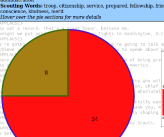

Hi. welcome to my experiments with JavaScript, HTML5, etc. The languages and techniques used on each page are described in the title.
Back to my main GitHub
Back to my main GitHub
This page uses HTML and CSS3.
Histogram generator. (HTML5 <canvas>, js)
Paints a trail of circles of semi-random colors determined by where the cursor is. (HTML5 <canvas>, js, CSS3)

Pretty pictures and sounds you can interact with. (JQuery, js, Bootstrap, CSS, HTML5)

Visualization of political terms vs scouting terms in President Trump's Boy Scount Jamboree speech 2017. (D3.js, CSS3, HTML5)
